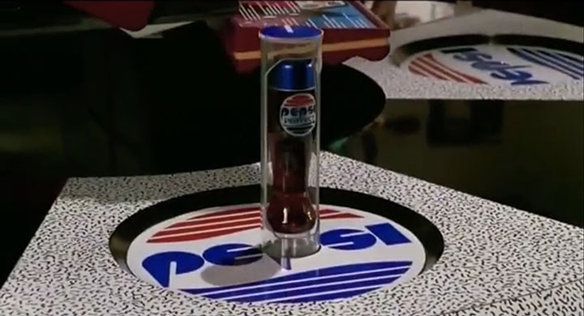
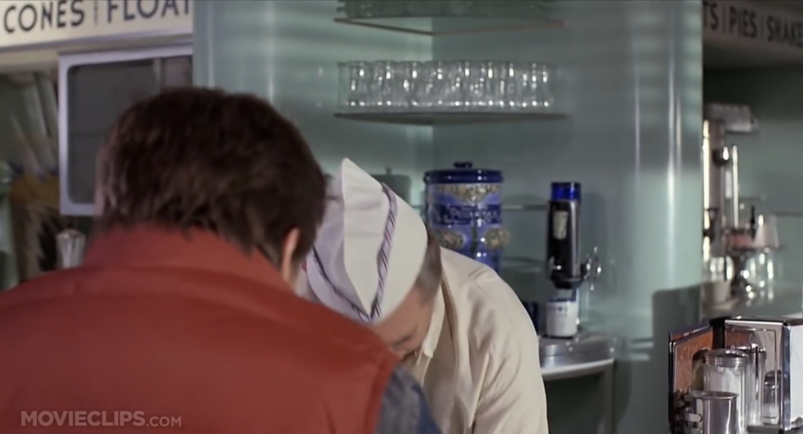

映画「バック・トゥ・ザ・フューチャー Part 1」の1955年に2015年のペプシが映り込んでいた？
1989年の映画「バック・トゥ・ザ・フューチャー Part 2」の冒頭、2015年の「Cafe 80's」で登場する、独特なビン形状のペプシコーラ。

一方、1985年の映画「バック・トゥ・ザ・フューチャー Part 1」で、1955年に迷い込んだ主人公マーティが訪れた「Lou's Cafe」の店内。

店主の後ろに置いてあるビンのようなモノを見ると、なんだか「2015年のペプシ」っぽくないだろうか…？
コレの正体は何なんですかね？